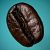

A ridiculously easy-to-use PHP script for resizing images the smart way.
One of the challenges that comes with maintaining a graphic-intensive website like Shifting Pixel is finding a way to get high quality images throughout the site with as little effort as possible. To tackle this, I developed the Smart Image Resizer and have been using it around the site for the past few months. I couldn’t be happier.
The major advantage of this script is that it allows me to resize and crop any image on my website without touching the actual image or writing any code. I upload each image once at a high enough resolution and can then reuse it at any size I want, anywhere I want. It doesn’t matter if the images are in a post, on a page, or in a template file–it just works. All of the magic is done through the query string part of the URL in the src attribute of the img tag.
And, if this wasn’t a big enough time-saver for me right now, it’ll be a huge time-saver the next time I decide to redesign my site. It’s a relief that I won’t have to go through to resize and re-upload a thousand photos to make sure they look right–I’ll just have to change the links to them and I’ll be all set.
Features
- Resizes JPEGs, GIFs, and PNGs
- Intelligently sharpens for crisp photos at any size
- Can crop based on width:height ratios
- Can color-fill transparent GIFs and PNGs
- Built-in caching keeps image variations for optimal performance
Requirements
PHP 5.1.0+ compiled with GD. (You need a version of GD that supports imageconvolution(), such as the bundled version. Note that on some distributions, the default php-gd package may not be adequate.)
Download
Download Smart Image Resizer v1.4.1 (Released August 6, 2008)
Tip jar
To Install
- Unzip on your web server
- In the same directory, create a directory called “imagecache”
- Make your imagecache directory is writable by the web server (usually
chmod 775)
Troubleshooting
- Turn on “display_errors = on” in your php.ini file. Restart Apache and verify with a phpinfo().
- Try visiting the URL that you are using as the
srcattribute of yourimgtag directly in the browser. For example, for example, stick this in your browser’s address bar:http://example.com/image.php?width=180&height=180&image=/path/to/image.jpg. If there is an error message here, it should be quite helpful. - If that doesn’t give you any information, turn on error reporting (add
error_reporting(E_ALL);to the top of image.php) and see if that gives you any information. It is possible that the script is trying to use a function that doesn’t exist in your installation and configuration of PHP. - If you can’t get the script to give you any information, try peaking into your error logs.
- Finally, if you can’t get any information out of any of these things, run a
phpinfo()and send me a link–if I have time I’ll take a look at it and tell you if anything looks out of the ordinary. As of this time, I am spending more time focusing on SLIR 2.
Common error messages
- Fatal error: Call to undefined function imagecreatetruecolor()
- This most likely means that you do not have GD installed. To fix this, install GD (make sure you are using a version that includes the
imageconvolution()function). - Fatal error: Call to undefined function imageconvolution()
- This means that you are using a version of GD that does not include the
imageconvolution()function. To fix this, you will either need to find a repository that includes the version of GD that you need, or compile php-gd from source.
License
I love to hear when my work is being used, so if you decide to use it, feel encouraged to send me an email. Smart Image Resizer is released under a Creative Commons Attribution-Share Alike 3.0 United States license. All I ask is that you include a link back to Shifting Pixel (either this page or shiftingpixel.com), but don’t worry about including a big link on each page if you don’t want to–one will do just nicely. Feel free to contact me to discuss any specifics.
Examples
These examples use my photo of this coffee bean. For more fine photography, browse my “Must See” photos or subscribe.
Resizing a JPEG
<img src="/image.php?width=200&height=200&image=/wp-content/uploads/2008/03/coffee-bean.jpg" alt="Coffee Bean" />
Resizing and cropping a JPEG into a square
<img src="/image.php?width=150&height=150&cropratio=1:1&image=/wp-content/uploads/2008/03/coffee-bean.jpg" alt="Coffee Bean" /> 


371 Comments
February 14th, 2010 at 9:29 am
What a fantastic script and kudos to you Joe for giving back to the online community like this.
I’m working on a new project at the moment and wondered…going forward, will you support this for the next couple of years or so or is it a case of, once it is working, it won’t need any updates. I’m just concerned about possible new releases of PHP etc not being compatible and all my site images breaking in one day?
Thanks
February 14th, 2010 at 10:23 am
@Tim: good question. I have been focusing most of my energy on the 2.0 version, so when that is done hopefully it will fit your needs going forward.
February 14th, 2010 at 4:23 pm
Great – thanks Joe!
February 14th, 2010 at 9:47 pm
Animated GIFs are converted to static gifs by the resizing process.
Any way to handle this better?
Would be nice to resize it, like all other image types.
February 15th, 2010 at 7:27 am
Hi, this seems like a fantastic script, but I’m looking to make some small modifications to it for use in my own project. I’m using CakePHP to create a site. One consequence of this is the fact that images displayed via the URL of:
http://something.com/img/image.jpgare actually hosted at:
/root/app/webroot/img/image.jpgThis, I can see, could cause some confusion when it comes to referencing images. As a result of this, I was wondering if it were possible for the path to the image to be relative? I.e. if I store image.php in:
/root/app/webroot/so I can send it a relative image reference, i.e.:
image.php?image=/img/something.jpgrather than:
image.php?image=/root/app/webroot/img/image.jpgto make life a little easier.
How hard would this be to do?
Thank you
February 16th, 2010 at 4:34 pm
Great script…. we had been searching for something like this for a long time and this one really fit the bill. One request: would it be possible to have parameter to restrict the image by width OR height and set the crop x-y? For example, it would be great to take a 300 x 222 image and constrict it to 300 x 200 center cropped, shaving 11px off the top and bottom.
Thanks much. We just implemented this and it works great.
February 17th, 2010 at 1:36 am
Hi good script , but found something wrong in this script may be you can fix it earlier. If directory name contains word like ‘+’ sign in url then it would not find the image as url broken.
February 17th, 2010 at 2:56 am
Ok i did it by using rawurlencode function with path. I thought to save your time by telling this
February 17th, 2010 at 5:13 am
Why you did’t write this in oop manner so its actually reusable ??!?!?!
February 17th, 2010 at 8:53 am
ok next time i will write in OOP manner if found something wrong, i write short to save your time and mine .thx
February 17th, 2010 at 9:07 am
@Dan: It would be nice if it handled animated GIFs, but that isn’t something that I have had time to implement yet. I believe that the process would involve splitting the GIF up into its frames, resizing each frame, and the re-splicing it back together.
@Daniel: That is actually how it is designed to work. You should be able to use a relative image request (
image.php?image=/img/something.jpg).@Trevor: You can do this. Just set the crop-ratio to 3:2.
@Rizwan: Yes, you are correct. For URL parameters that contain reserved characters like plus signs to work, you will need to escape them somehow. As you mentioned, PHP has a function for this called
rawurlencode().@WTF: I have been working on an OOP version that you might want to check out. If you do, be sure to grab the latest from the SVN (currently at r77) instead of the 2.0b2 download. Although, most of the methods are restricted so I am not sure how “reusable” it will be out of the box. With a little tweakage I don’t think it should be too bad. What specifically did you have in mind?
February 18th, 2010 at 6:44 am
Hi , can anyone to say what is performance of the script comparing with direct image access?
February 21st, 2010 at 3:12 pm
Hello!
Great script, thanks for sharing.
I’ve integrated my script in my CMS, but… there is a serious problem…
The leverage browsing cache is not work using this script.
So, the images is served correctly, and not scaled in HTML… this is very good, but the browser cache is not working.
This is more evident using Internet Explorer 8. If you refresh the page, you see that the images are loaded/downloaded again!
The rule:
Header set Cache-Control “max-age=29030400, public”
is not working, all the images are dowloaded ex-novo all the times!
I have used a rewriterule to have clean urls, the cached images as the originals.
However the images are loaded all the times and are not cached by the browser.
This makes the script useless for performaces purpose and to remedy to the problem of HTML scaling… but with the HTML scaling all the images are cached by the browser.
Can you fix this?
Regards.
February 21st, 2010 at 3:54 pm
Oh another things…
Do not use Etags, it’s slow down the website performances.
I tried some experiment with your script into a real remote server.
It seems that there is a mistake with your header() functions, because invalidate all the directive with apache (about caching).
Plz, remove etags, first of all.
Take a look here: http://developer.yahoo.com/performance/rules.html
Anyway your script is good.
Back to more update (I hope!)
Regards.
February 24th, 2010 at 9:46 pm
Hi Master,
You can explain me ¿How to use this script in wordpress dinamically? I can’t get that this script works..You can help me please?
Thanks in advance.
February 25th, 2010 at 11:49 am
Read the comment of zach.
You must replace img src=yourpic with img src=image.php etc.
Anyway there is a problem with the cache, if you are not using the cache rules (Apache) you’re ok.
Using this script you get “200 ok” instead of “304 not modifyed”, so the thumbs are reloaded all the time.
Tested on hostgator, using Pagespeed and Live HTTP headers (firefox plugin).
So, I’ve removed the script from my CMS
Awaiting the response/suggestion of Joe.
Regards.
February 26th, 2010 at 12:10 am
@Ottiv: You should check out SLIR 2.0 and let me know what you think. I just uploaded b3.
February 26th, 2010 at 12:26 am
Comments are now closed on this post. I have set up a Google Group for discussion and community support.
March 13th, 2010 at 11:31 am
[...] original script called SIR (Smart Image Resizer) is available on the Shifting Pixel website. It requires placing a single PHP file in the same directory the images that you wish to [...]
September 27th, 2010 at 12:22 pm
[...] savjetima, počeo sam tražiti drugo riješenje. I u toj potrazi naišao sam na skriptu smart image resizer . Ta skripta radi na sličan način kao i timthumb i sada ću opisati kako sam ju [...]
September 27th, 2010 at 12:23 pm
[...] looking for another way to make this script work. And while searching the internet I have found smart image resizer script. And this is how I implemented it into Magazeen [...]